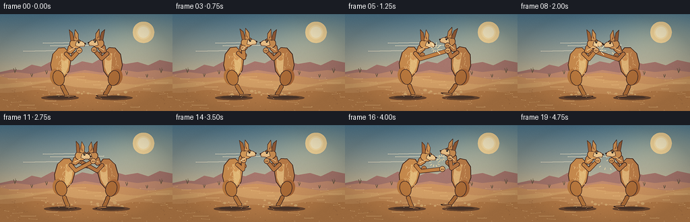
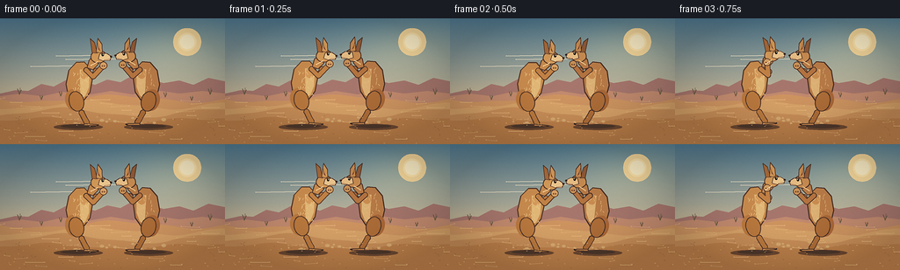
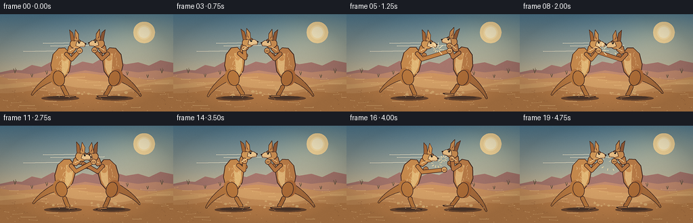
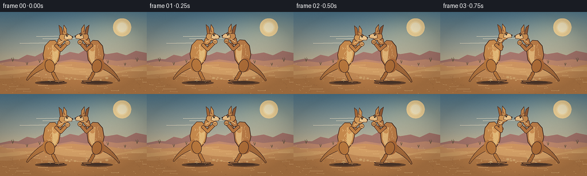
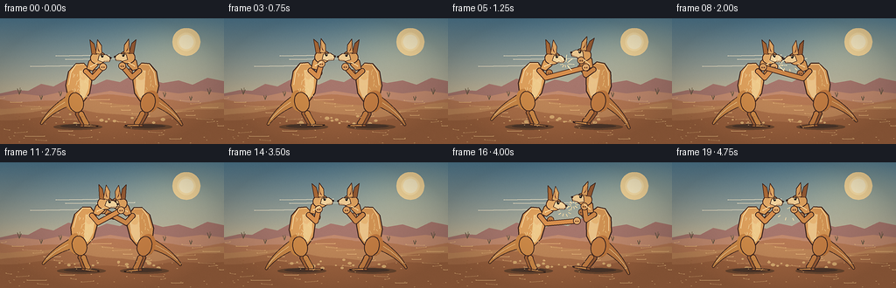
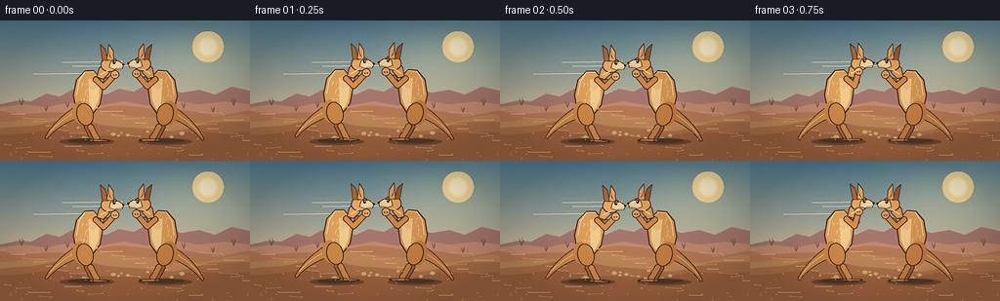

CODING AGENTS AS PIXEL WORLD MODELS
traex/DeepSeek-V4.1-Flash · instance_preservation_0009
点击播放 · 原生 RGB 像素
逐轮保存的候选
回放视频、检查图与代码变化。
每份候选均可单独播放。实际图片检查记录在下方工具轨迹中。
候选 01播放与检查图
点击播放 · 原生 RGB 像素


展开代码变化
--- 上一保存版本
+++ 本次保存版本
@@ -0,0 +1,498 @@
+from __future__ import annotations
+
+import math
+import random
+from pathlib import Path
+
+import numpy as np
+from PIL import Image, ImageDraw, ImageFilter
+
+import artifact_io
+
+
+ROOT = Path(__file__).resolve().parent
+W, H = 256, 144
+FRAMES = 20
+FPS = 4.0
+SS = 4
+RW, RH = W * SS, H * SS
+
+
+def rgba(hex_color: str, alpha: int = 255) -> tuple[int, int, int, int]:
+ value = hex_color.lstrip("#")
+ return tuple(int(value[i : i + 2], 16) for i in (0, 2, 4)) + (alpha,)
+
+
+def lerp(a: float, b: float, t: float) -> float:
+ return a + (b - a) * t
+
+
+def lerp_color(a, b, t):
+ return tuple(round(lerp(x, y, t)) for x, y in zip(a, b))
+
+
+def smoothstep(t: float) -> float:
+ t = max(0.0, min(1.0, t))
+ return t * t * (3.0 - 2.0 * t)
+
+
+def scaled_point(point):
+ return (point[0] * SS, point[1] * SS)
+
+
+def rotate(point, angle):
+ x, y = point
+ ca, sa = math.cos(angle), math.sin(angle)
+ return x * ca - y * sa, x * sa + y * ca
+
+
+class Scene:
+ def __init__(self, image: Image.Image):
+ self.image = image
+ self.draw = ImageDraw.Draw(image, "RGBA")
+
+ def polygon(self, points, fill, outline=None, width=1):
+ pts = [scaled_point(p) for p in points]
+ self.draw.polygon(pts, fill=fill)
+ if outline is not None:
+ self.draw.line(pts + [pts[0]], fill=outline, width=max(1, round(width * SS)), joint="curve")
+
+ def ellipse(self, center, rx, ry, fill, outline=None, width=1, angle=0.0):
+ pts = []
+ for i in range(32):
+ t = 2.0 * math.pi * i / 32
+ x, y = rx * math.cos(t), ry * math.sin(t)
+ x, y = rotate((x, y), angle)
+ pts.append(scaled_point((center[0] + x, center[1] + y)))
+ self.draw.polygon(pts, fill=fill)
+ if outline is not None:
+ self.draw.line(pts + [pts[0]], fill=outline, width=max(1, round(width * SS)), joint="curve")
+
+ def line(self, points, fill, width, joint="curve"):
+ pts = [scaled_point(p) for p in points]
+ self.draw.line(pts, fill=fill, width=max(1, round(width * SS)), joint=joint)
+ radius = width * SS / 2
+ for p in (pts[0], pts[-1]):
+ self.draw.ellipse((p[0] - radius, p[1] - radius, p[0] + radius, p[1] + radius), fill=fill)
+
+ def polyline_ellipses(self, points, radii, fill):
+ for (x, y), r in zip(points, radii):
+ self.ellipse((x, y), r, r, fill)
+
+ def bezier(self, p0, p1, p2, p3, count=24):
+ result = []
+ for i in range(count + 1):
+ t = i / count
+ u = 1.0 - t
+ x = u**3 * p0[0] + 3 * u * u * t * p1[0] + 3 * u * t * t * p2[0] + t**3 * p3[0]
+ y = u**3 * p0[1] + 3 * u * u * t * p1[1] + 3 * u * t * t * p2[1] + t**3 * p3[1]
+ result.append((x, y))
+ return result
+
+ def tail(self, points, width0, width1, fill, outline, angle):
+ transformed = [rotate(p, angle) for p in points]
+ for i, point in enumerate(transformed):
+ t = i / (len(transformed) - 1)
+ r = lerp(width0, width1, t**0.8)
+ self.ellipse(point, r + 0.8, r + 0.8, outline)
+ for i, point in enumerate(transformed):
+ t = i / (len(transformed) - 1)
+ r = lerp(width0, width1, t**0.8)
+ self.ellipse(point, r, r, fill)
+ return transformed
+
+ def limb(self, a, b, c, width, fill, outline, angle):
+ pa, pb, pc = (rotate(p, angle) for p in (a, b, c))
+ self.line([pa, pb, pc], outline, width + 1.8)
+ self.line([pa, pb, pc], fill, width)
+ return pa, pb, pc
+
+
+def background(frame_index: int) -> Image.Image:
+ y = np.linspace(0.0, 1.0, RH, dtype=np.float32)[:, None]
+ top = np.array([80, 122, 145], dtype=np.float32)
+ middle = np.array([184, 177, 153], dtype=np.float32)
+ horizon = np.array([241, 191, 132], dtype=np.float32)
+
+ sky_t = np.clip(y / 0.56, 0, 1)
+ sky = top[None, None, :] * (1 - sky_t[..., None]) + middle[None, None, :] * sky_t[..., None]
+ below = np.clip((y - 0.48) / 0.52, 0, 1)
+ sky = sky * (1 - below[..., None] * 0.52) + horizon[None, None, :] * (below[..., None] * 0.52)
+ arr = np.repeat(sky, RW, axis=1)
+
+ # Warm light bloom from the upper-right.
+ xx = np.linspace(-1.0, 1.0, RW, dtype=np.float32)[None, :]
+ yy = np.linspace(-1.0, 1.0, RH, dtype=np.float32)[:, None]
+ glow = np.exp(-((xx - 0.62) ** 2 + (yy + 0.53) ** 2) / 0.25)
+ arr += glow[..., None] * np.array([34, 26, 10], dtype=np.float32)
+
+ image = Image.fromarray(np.clip(arr, 0, 255).astype(np.uint8), "RGB").convert("RGBA")
+ scene = Scene(image)
+
+ # Sun and thin atmospheric bands.
+ scene.ellipse((213, 27), 16, 16, rgba("#f6d89c", 35))
+ scene.ellipse((213, 27), 10.5, 10.5, rgba("#ffe4ac", 180))
+ scene.ellipse((213, 27), 8.3, 8.3, rgba("#fff0c8", 240))
+ for yy, xx0, xx1, alpha in [(43, 64, 125, 30), (47, 75, 154, 24), (55, 35, 102, 18)]:
+ scene.line([(xx0, yy), (xx1, yy - 1)], rgba("#fff0d0", alpha), 0.8)
+
+ # Layered desert ridges.
+ back_ridge = [(0, 86), (18, 82), (32, 83), (47, 75), (61, 78), (78, 69),
+ (92, 72), (108, 76), (122, 70), (137, 73), (153, 64), (169, 69),
+ (186, 74), (204, 71), (220, 76), (237, 68), (256, 72), (256, 94), (0, 94)]
+ scene.polygon(back_ridge, rgba("#a7776d", 185))
+ scene.polygon([(0, 89), (23, 86), (48, 89), (71, 84), (98, 88), (126, 83),
+ (151, 87), (176, 82), (204, 86), (230, 83), (256, 86), (256, 99), (0, 99)],
+ rgba("#c38b6f", 215))
+
+ # Rounded dunes.
+ for base_y, color, amp, phase in [
+ (92, "#cf9561", 3.8, 0.1),
+ (99, "#d7a268", 4.5, 1.1),
+ (108, "#c88e58", 5.0, 2.2),
+ (117, "#bd804a", 3.0, 3.0),
+ ]:
+ pts = [(0, H)]
+ for x in range(0, W + 1, 2):
+ yy = base_y + amp * math.sin(x * 0.035 + phase) + 1.2 * math.sin(x * 0.09 + phase * 2)
+ pts.append((x, yy))
+ pts.append((W, H))
+ scene.polygon(pts, rgba(color))
+
+ # Sand striations and distant scrub.
+ for i in range(36):
+ yy = 92 + (i * 37 % 48)
+ xx = (i * 67 + frame_index // 5) % W
+ length = 5 + (i * 11) % 18
+ alpha = 28 + (i % 4) * 8
+ scene.line([(xx, yy), (min(W, xx + length), yy + (i % 3) - 1)], rgba("#f1c082", alpha), 0.55)
+ for x, y, s in [(22, 87, 1.0), (47, 93, 0.7), (69, 89, 0.8), (188, 90, 0.8), (218, 94, 0.7), (239, 87, 1.0)]:
+ scene.line([(x, y), (x - 2 * s, y - 6 * s)], rgba("#655642", 180), 0.7)
+ scene.line([(x, y), (x + 2 * s, y - 5 * s)], rgba("#655642", 180), 0.7)
+ scene.line([(x, y), (x + 1, y - 7 * s)], rgba("#76634a", 180), 0.6)
+
+ # Subtle film grain, applied before the subjects.
+ arr = np.asarray(image.convert("RGB")).astype(np.int16)
+ rng = np.random.default_rng(41)
+ grain = rng.normal(0, 2.2, (RH, RW, 1)).round().astype(np.int16)
+ arr = np.clip(arr + grain, 0, 255).astype(np.uint8)
+ return Image.fromarray(arr, "RGB").convert("RGBA")
+
+
+def transformed(point, cx, hip_y, facing, angle, scale=1.0):
+ x, y = point
+ x, y = rotate((x * scale, y * scale), angle)
+ return cx + x * facing, hip_y + y
+
+
+def draw_arm(scene, cx, hip_y, facing, angle, arm, palette, far=False):
+ elbow, wrist = arm
+ shoulder = (9.5, -34.5)
+ a = transformed(shoulder, cx, hip_y, facing, angle)
+ b = transformed(elbow, cx, hip_y, facing, angle)
+ c = transformed(wrist, cx, hip_y, facing, angle)
+ base = palette["arm_far"] if far else palette["arm"]
+ edge = palette["outline"]
+ scene.limb(a, b, c, 4.2 if far else 4.7, base, edge, 0.0)
+ paw_r = 3.2 if far else 3.6
+ scene.ellipse(c, paw_r + 0.8, paw_r + 0.8, edge)
+ scene.ellipse(c, paw_r, paw_r, palette["paw_far"] if far else palette["paw"])
+ # Two small knuckles make the boxing paw legible.
+ for offset in (-1.2, 1.2):
+ px, py = c[0] + offset * facing, c[1] + 0.5
+ scene.ellipse((px, py), 0.75, 0.75, palette["paw_shadow"])
+
+
+def draw_foot(scene, cx, hip_y, facing, angle, palette, far=False):
+ hip = transformed((-1.0, 1.5), cx, hip_y, facing, angle)
+ knee = transformed((5.2, 14.5), cx, hip_y, facing, angle)
+ ankle = transformed((9.0, 22.0), cx, hip_y, facing, angle)
+ foot = transformed((11.0, 25.2), cx, hip_y, facing, angle)
+ base = palette["leg_far"] if far else palette["leg"]
+ scene.ellipse(hip, 8.2 if not far else 7.4, 11.5 if not far else 10.8, base,
+ palette["outline"], 1.0, angle=-0.24 * facing)
+ scene.limb(knee, ankle, foot, 5.0 if not far else 4.3, base, palette["outline"], 0.0)
+ toe_a = transformed((8.5, 26.7), cx, hip_y, facing, angle)
+ toe_b = transformed((21.8, 27.6), cx, hip_y, facing, angle)
+ toe_c = transformed((23.4, 29.0), cx, hip_y, facing, angle)
+ toe_d = transformed((8.0, 29.0), cx, hip_y, facing, angle)
+ scene.polygon([toe_a, toe_b, toe_c, toe_d], palette["foot_far"] if far else palette["foot"],
+ palette["outline"], 0.9)
+ claw = transformed((23.8, 28.2), cx, hip_y, facing, angle)
+ scene.ellipse(claw, 1.0, 0.7, palette["claw"])
+
+
+def draw_kangaroo(scene, cx, hip_y, facing, pose, palette, seed):
+ angle = math.radians(pose.get("angle", 0.0))
+ scale = pose.get("scale", 1.0)
+ outline = palette["outline"]
+
+ # Ground shadow.
+ scene.ellipse((cx + 1, 124.4), 28 * scale, 3.6, rgba("#6e4931", 65))
+ scene.ellipse((cx + 1, 123.6), 20 * scale, 2.2, rgba("#4d372b", 45))
+
+ # Tail sweeps behind the body and tapers to a point.
+ tail_local = scene.bezier((-8, -1), (-22, 6), (-34, 16), (-40, 26), 26)
+ tail_local = [(x * scale, y * scale) for x, y in tail_local]
+ scene.tail(tail_local, 5.8 * scale, 0.8, palette["tail"], outline, angle)
+
+ # Far leg and arm are drawn first to create depth.
+ draw_foot(scene, cx, hip_y, facing, angle, palette, far=True)
+ draw_arm(scene, cx, hip_y, facing, angle, pose["rear_arm"], palette, far=True)
+
+ body = [(-10.5, -5), (-13.2, -18), (-10.2, -34), (-2.0, -43.2), (7.0, -43.7),
+ (13.8, -36.5), (16.6, -23), (14.2, -9), (7.0, 1.0), (-3.8, 4.2)]
+ body = [transformed(p, cx, hip_y, facing, angle, scale) for p in body]
+ scene.polygon(body, palette["body"], outline, 1.15)
+
+ # Chest and belly, offset toward the front of the body.
+ belly = [(2.2, -35), (8.8, -35.5), (13.2, -27), (12.8, -15), (9.0, -5),
+ (4.0, -2), (3.2, -12)]
+ belly = [transformed(p, cx, hip_y, facing, angle, scale) for p in belly]
+ scene.polygon(belly, palette["belly"])
+
+ # Shoulder and haunch shading.
+ haunch = transformed((-4.5, 0.0), cx, hip_y, facing, angle, scale)
+ scene.ellipse(haunch, 9.2 * scale, 12.5 * scale, palette["haunch"], None, 1, angle=-0.2 * facing)
+ shoulder = transformed((8.3, -31.0), cx, hip_y, facing, angle, scale)
+ scene.ellipse(shoulder, 5.0 * scale, 7.0 * scale, palette["shoulder"], None, 1, angle=0.35 * facing)
+
+ # Fur strokes, deterministic per animal.
+ rng = random.Random(seed)
+ for _ in range(34):
+ bx = rng.uniform(-8, 12)
+ by = rng.uniform(-38, -2)
+ if ((bx - 4) / 11) ** 2 + ((by + 21) / 20) ** 2 > 1.05:
+ continue
+ p1 = transformed((bx, by), cx, hip_y, facing, angle, scale)
+ p2 = transformed((bx + rng.uniform(-2.0, 2.0), by + rng.uniform(1.4, 3.0)),
+ cx, hip_y, facing, angle, scale)
+ scene.line([p1, p2], rgba(palette["fur"], 78), 0.55)
+
+ # Near hind leg.
+ draw_foot(scene, cx, hip_y, facing, angle, palette, far=False)
+
+ # Neck and head.
+ neck = [(10.5, -37), (12.8, -46), (18.5, -52), (25.0, -49), (23.0, -41), (17.0, -35)]
+ neck = [transformed(p, cx, hip_y, facing, angle, scale) for p in neck]
+ scene.polygon(neck, palette["body"], outline, 1.0)
+
+ head_center = transformed((23.3, -50.0), cx, hip_y, facing, angle, scale)
+ scene.ellipse(head_center, 8.7 * scale, 7.3 * scale, palette["head"], outline, 1.0,
+ angle=(-0.12 + angle) * facing)
+ muzzle = [(24.5, -53.0), (32.5, -54.0), (38.0, -50.5), (36.3, -46.1),
+ (28.5, -45.4), (23.0, -47.3)]
+ muzzle = [transformed(p, cx, hip_y, facing, angle, scale) for p in muzzle]
+ scene.polygon(muzzle, palette["muzzle"], outline, 0.8)
+
+ # Ears: one dark rear ear and one lit front ear.
+ rear_ear = [(16.0, -54.5), (13.5, -70.5), (18.6, -66.0), (21.8, -54.0)]
+ front_ear = [(20.5, -55.2), (22.2, -71.0), (27.0, -64.0), (27.4, -53.8)]
+ for points, fill in [(rear_ear, palette["ear_far"]), (front_ear, palette["head"])]:
+ pts = [transformed(p, cx, hip_y, facing, angle, scale) for p in points]
+ scene.polygon(pts, fill, outline, 0.8)
+ inner = [(21.7, -67.0), (23.0, -61.0), (25.2, -56.5), (23.2, -58.3)]
+ inner = [transformed(p, cx, hip_y, facing, angle, scale) for p in inner]
+ scene.polygon(inner, palette["ear_inner"])
+
+ # Eye, brow, nose and mouth.
+ eye = transformed((28.0, -52.2), cx, hip_y, facing, angle, scale)
+ scene.ellipse(eye, 1.35, 1.55, rgba("#211a16"))
+ glint = transformed((28.35, -52.8), cx, hip_y, facing, angle, scale)
+ scene.ellipse(glint, 0.35, 0.4, rgba("#fff2d5", 230))
+ brow_a = transformed((26.0, -55.0), cx, hip_y, facing, angle, scale)
+ brow_b = transformed((30.2, -54.2), cx, hip_y, facing, angle, scale)
+ scene.line([brow_a, brow_b], palette["outline"], 0.7)
+ nose = transformed((37.5, -50.3), cx, hip_y, facing, angle, scale)
+ scene.ellipse(nose, 1.2, 1.0, rgba("#3a2822"))
+ mouth_a = transformed((36.2, -47.5), cx, hip_y, facing, angle, scale)
+ mouth_b = transformed((30.2, -46.4), cx, hip_y, facing, angle, scale)
+ scene.line([mouth_a, mouth_b], rgba("#6e3d2e", 210), 0.55)
+
+ # Near boxing arm.
+ draw_arm(scene, cx, hip_y, facing, angle, pose["lead_arm"], palette, far=False)
+
+ # A few pale highlights along the head and back.
+ shine_a = transformed((15.0, -40.0), cx, hip_y, facing, angle, scale)
+ shine_b = transformed((22.0, -44.0), cx, hip_y, facing, angle, scale)
+ scene.line([shine_a, shine_b], rgba(palette["shine"], 110), 1.1)
+
+
+PALETTE_LEFT = {
+ "body": rgba("#c88b4e"), "belly": rgba("#e2b877"), "head": rgba("#d49a59"),
+ "muzzle": rgba("#edc78f"), "arm": rgba("#c18145"), "arm_far": rgba("#a86939"),
+ "paw": rgba("#d6a064"), "paw_far": rgba("#b87943"), "paw_shadow": rgba("#83502f"),
+ "leg": rgba("#ba793e"), "leg_far": rgba("#996035"), "foot": rgba("#c88c51"),
+ "foot_far": rgba("#a76b3b"), "tail": rgba("#b87942"), "haunch": rgba("#b97940", 175),
+ "shoulder": rgba("#d59a5a", 130), "ear_far": rgba("#a86a3a"), "ear_inner": rgba("#7f4632"),
+ "outline": rgba("#573829"), "claw": rgba("#3e2b24"), "fur": "#f0c78a", "shine": "#f6d49b",
+}
+PALETTE_RIGHT = {
+ "body": rgba("#b87b47"), "belly": rgba("#ddb175"), "head": rgba("#c88c51"),
+ "muzzle": rgba("#e9bf86"), "arm": rgba("#b37340"), "arm_far": rgba("#925b36"),
+ "paw": rgba("#c99158"), "paw_far": rgba("#a96c3c"), "paw_shadow": rgba("#74482f"),
+ "leg": rgba("#ad6d38"), "leg_far": rgba("#875432"), "foot": rgba("#ba7e48"),
+ "foot_far": rgba("#965d36"), "tail": rgba("#a96d3d"), "haunch": rgba("#a96737", 175),
+ "shoulder": rgba("#ca8d51", 130), "ear_far": rgba("#915b37"), "ear_inner": rgba("#713f2e"),
+ "outline": rgba("#4d3328"), "claw": rgba("#382722"), "fur": "#e7bb80", "shine": "#e9c58b",
+}
+
+
+def guard_pose(lead=(28, -40), rear=(20, -32), angle=0.0, scale=1.0):
+ return {
+ "lead_arm": ((17.5, -27.0), lead),
+ "rear_arm": ((13.5, -24.0), rear),
+ "angle": angle,
+ "scale": scale,
+ }
+
+
+def pose_for(frame: int, side: str):
+ if side == "left":
+ sequence = {
+ 0: guard_pose((29, -40), (21, -33), 1.0),
+ 1: guard_pose((30, -41), (22, -34), 1.5),
+ 2: guard_pose((28, -39), (19, -32), 3.0),
+ 3: guard_pose((17, -42), (18, -31), -3.0),
+ 4: guard_pose((42, -43), (19, -32), 2.0),
+ 5: guard_pose((57, -43), (20, -33), 5.0),
+ 6: guard_pose((48, -38), (19, -31), 7.5),
+ 7: guard_pose((32, -38), (19, -31), 4.0),
+ 8: guard_pose((28, -40), (20, -33), 1.0),
+ 9: guard_pose((25, -43), (25, -35), -1.0),
+ 10: guard_pose((39, -43), (27, -35), 4.0),
+ 11: guard_pose((42, -44), (30, -36), 6.0),
+ 12: guard_pose((52, -39), (32, -34), 7.0),
+ 13: guard_pose((29, -40), (21, -33), 2.0),
+ 14: guard_pose((19, -41), (19, -32), -2.0),
+ 15: guard_pose((55, -37), (21, -33), 6.0),
+ 16: guard_pose((49, -35), (22, -32), 8.0),
+ 17: guard_pose((31, -39), (21, -33), 3.0),
+ 18: guard_pose((29, -40), (21, -33), 1.0),
+ 19: guard_pose((30, -41), (22, -34), 1.5),
+ }
+ else:
+ sequence = {
+ 0: guard_pose((29, -40), (21, -33), -1.0),
+ 1: guard_pose((30, -41), (22, -34), -1.5),
+ 2: guard_pose((29, -40), (21, -33), -3.0),
+ 3: guard_pose((29, -39), (21, -32), -1.0),
+ 4: guard_pose((27, -42), (20, -33), -4.0),
+ 5: guard_pose((25, -43), (24, -35), -8.0),
+ 6: guard_pose((23, -42), (23, -34), -10.0),
+ 7: guard_pose((18, -41), (19, -32), -4.0),
+ 8: guard_pose((57, -43), (20, -33), 4.0),
+ 9: guard_pose((49, -38), (20, -32), 7.0),
+ 10: guard_pose((39, -43), (28, -35), 3.0),
+ 11: guard_pose((43, -44), (31, -36), 5.0),
+ 12: guard_pose((53, -39), (32, -34), 7.0),
+ 13: guard_pose((30, -40), (21, -33), 2.0),
+ 14: guard_pose((28, -40), (20, -33), 0.0),
+ 15: guard_pose((24, -43), (25, -36), -3.0),
+ 16: guard_pose((22, -42), (24, -35), -9.0),
+ 17: guard_pose((21, -41), (22, -34), -12.0),
+ 18: guard_pose((27, -40), (20, -33), -5.0),
+ 19: guard_pose((29, -40), (21, -33), -1.0),
+ }
+ return sequence[frame]
+
+
+def draw_dust(scene, frame: int):
+ rng = random.Random(900)
+ # Persistent foot dust.
+ for i in range(22):
+ birth = (i * 7) % 20
+ age = (frame - birth) % 20
+ x0 = 73 + (i * 31) % 110
+ y0 = 119 + (i % 4)
+ drift = (i % 2 * 2 - 1) * age * (0.45 + (i % 3) * 0.12)
+ rise = age * (0.35 + (i % 5) * 0.1)
+ alpha = int(34 * max(0.0, 1.0 - age / 13.0))
+ if alpha <= 0:
+ continue
+ r = 0.9 + (i % 4) * 0.45 + age * 0.035
+ scene.ellipse((x0 + drift, y0 - rise), r, r * 0.7, rgba("#d8aa6f", alpha))
+
+ # Bursts at the two strongest impacts.
+ bursts = [
+ (5, 134, 52, 0),
+ (8, 121, 53, 1),
+ (15, 133, 56, 2),
+ (16, 143, 49, 3),
+ ]
+ for impact_frame, bx, by, bid in bursts:
+ age = frame - impact_frame
+ if age < 0 or age > 4:
+ continue
+ t = age / 4
+ for k in range(9):
+ ang = -2.7 + k * 0.7 + bid * 0.17
+ distance = 2.0 + 8.5 * t + rng.random() * 2.0
+ x = bx + math.cos(ang) * distance
+ y = by + math.sin(ang) * distance * 0.75
+ alpha = int(125 * (1.0 - t))
+ scene.line([(x, y), (x + math.cos(ang) * 2.5, y + math.sin(ang) * 2.5)],
+ rgba("#ffe1a8", alpha), 0.65)
+
+
+def draw_action_lines(scene, frame: int):
+ if frame in (5, 8, 15):
+ centers = {5: (134, 52), 8: (121, 53), 15: (134, 56)}
+ x, y = centers[frame]
+ for ang in (-2.7, -2.1, -1.4, -0.6, 0.1, 0.8):
+ r0, r1 = 5.0, 10.0
+ scene.line([(x + math.cos(ang) * r0, y + math.sin(ang) * r0),
+ (x + math.cos(ang) * r1, y + math.sin(ang) * r1)],
+ rgba("#fff0c4", 150), 0.7)
+
+
+def compose_frame(index: int) -> np.ndarray:
+ image = background(index)
+ scene = Scene(image)
+
+ # Footwork and recoil are deliberately kept small enough to preserve anatomy.
+ left_x = 88 + [0, 0, 1, 2, 3, 4, 2, 1, 0, 0, 2, 4, 3, 1, 0, 1, 3, 1, 0, 0][index]
+ right_x = 168 + [0, 0, -1, -1, 0, 3, 5, 2, 1, 1, -2, -4, -3, -1, 0, 0, 3, 5, 2, 0][index]
+ bob_left = 93.5 + [0, -1.2, 0.3, -0.5, -1.0, -1.5, 0.4, 0.8, 0, -0.3, -1.0, -0.8, 0.2, 0.4, 0, -0.8, -0.5, 0.5, 0, -0.6][index]
+ bob_right = 93.5 + [0, -0.7, 0.4, 0, -0.4, -0.8, -0.2, 0.2, -0.5, -0.8, -0.5, -0.2, 0.4, 0, -0.3, -0.4, 0.4, 0.8, 0.3, -0.4][index]
+
+ # Dust behind the animals.
+ draw_dust(scene, index)
+
+ # Right animal first so its far side sits behind the left during the clinch.
+ draw_kangaroo(scene, right_x, bob_right, -1, pose_for(index, "right"), PALETTE_RIGHT, 202)
+ draw_kangaroo(scene, left_x, bob_left, 1, pose_for(index, "left"), PALETTE_LEFT, 101)
+
+ draw_action_lines(scene, index)
+
+ # Foreground sand grains and small stones add depth without distracting from the fight.
+ rng = random.Random(7)
+ for _ in range(80):
+ x = rng.uniform(0, W)
+ y = rng.uniform(111, 143)
+ length = rng.uniform(0.3, 1.2)
+ shade = rng.choice(["#9e653c", "#e1ad72", "#a97043", "#f0c083"])
+ scene.line([(x, y), (x + length, y + rng.uniform(-0.2, 0.2))], rgba(shade, rng.randint(55, 120)), 0.45)
+
+ # Gentle vignette keeps focus on the fighters.
+ arr = np.asarray(image.convert("RGB")).astype(np.float32)
+ xx = np.linspace(-1, 1, RW, dtype=np.float32)[None, :]
+ yy = np.linspace(-1, 1, RH, dtype=np.float32)[:, None]
+ vignette = np.clip(1.0 - 0.16 * (xx * xx + yy * yy), 0.82, 1.0)
+ arr *= vignette[..., None]
+ image = Image.fromarray(np.clip(arr, 0, 255).astype(np.uint8), "RGB")
+ image = image.resize((W, H), Image.Resampling.LANCZOS)
+
+ # A light, fixed final sharpen recovers small facial and paw details.
+ image = image.filter(ImageFilter.UnsharpMask(radius=0.55, percent=55, threshold=3))
+ return np.asarray(image, dtype=np.uint8)
+
+
+def main():
+ frames = np.stack([compose_frame(i) for i in range(FRAMES)])
+ artifact_io.save(frames, ROOT)
+ print(f"saved {frames.shape} RGB frames to {ROOT}")
+
+
+if __name__ == "__main__":
+ main()
候选 02播放与检查图
点击播放 · 原生 RGB 像素
展开代码变化
--- 上一保存版本
+++ 本次保存版本
@@ -233,8 +233,8 @@
# Tail sweeps behind the body and tapers to a point.
tail_local = scene.bezier((-8, -1), (-22, 6), (-34, 16), (-40, 26), 26)
- tail_local = [(x * scale, y * scale) for x, y in tail_local]
- scene.tail(tail_local, 5.8 * scale, 0.8, palette["tail"], outline, angle)
+ tail_points = [transformed(p, cx, hip_y, facing, angle, scale) for p in tail_local]
+ scene.tail(tail_points, 5.8 * scale, 0.8, palette["tail"], outline, 0.0)
# Far leg and arm are drawn first to create depth.
draw_foot(scene, cx, hip_y, facing, angle, palette, far=True)
候选 03播放与检查图
点击播放 · 原生 RGB 像素

展开代码变化
代码未变化；重新保存了产物。
候选 04播放与检查图
点击播放 · 原生 RGB 像素


展开代码变化
--- 上一保存版本
+++ 本次保存版本
@@ -126,7 +126,7 @@
glow = np.exp(-((xx - 0.62) ** 2 + (yy + 0.53) ** 2) / 0.25)
arr += glow[..., None] * np.array([34, 26, 10], dtype=np.float32)
- image = Image.fromarray(np.clip(arr, 0, 255).astype(np.uint8), "RGB").convert("RGBA")
+ image = Image.fromarray(np.clip(arr, 0, 255).astype(np.uint8)).convert("RGBA")
scene = Scene(image)
# Sun and thin atmospheric bands.
@@ -147,10 +147,10 @@
# Rounded dunes.
for base_y, color, amp, phase in [
- (92, "#cf9561", 3.8, 0.1),
- (99, "#d7a268", 4.5, 1.1),
- (108, "#c88e58", 5.0, 2.2),
- (117, "#bd804a", 3.0, 3.0),
+ (92, "#b87a55", 3.8, 0.1),
+ (99, "#c08759", 4.5, 1.1),
+ (108, "#ac7049", 5.0, 2.2),
+ (117, "#9e633f", 3.0, 3.0),
]:
pts = [(0, H)]
for x in range(0, W + 1, 2):
@@ -176,7 +176,7 @@
rng = np.random.default_rng(41)
grain = rng.normal(0, 2.2, (RH, RW, 1)).round().astype(np.int16)
arr = np.clip(arr + grain, 0, 255).astype(np.uint8)
- return Image.fromarray(arr, "RGB").convert("RGBA")
+ return Image.fromarray(arr).convert("RGBA")
def transformed(point, cx, hip_y, facing, angle, scale=1.0):
@@ -204,21 +204,25 @@
def draw_foot(scene, cx, hip_y, facing, angle, palette, far=False):
- hip = transformed((-1.0, 1.5), cx, hip_y, facing, angle)
- knee = transformed((5.2, 14.5), cx, hip_y, facing, angle)
- ankle = transformed((9.0, 22.0), cx, hip_y, facing, angle)
- foot = transformed((11.0, 25.2), cx, hip_y, facing, angle)
+ offset = -4.0 if far else 0.0
+ def point(x, y):
+ return transformed((x + offset, y), cx, hip_y, facing, angle)
+
+ hip = point(-1.0, 1.5)
+ knee = point(5.2, 14.5)
+ ankle = point(9.0, 22.0)
+ foot = point(11.0, 25.2)
base = palette["leg_far"] if far else palette["leg"]
scene.ellipse(hip, 8.2 if not far else 7.4, 11.5 if not far else 10.8, base,
palette["outline"], 1.0, angle=-0.24 * facing)
scene.limb(knee, ankle, foot, 5.0 if not far else 4.3, base, palette["outline"], 0.0)
- toe_a = transformed((8.5, 26.7), cx, hip_y, facing, angle)
- toe_b = transformed((21.8, 27.6), cx, hip_y, facing, angle)
- toe_c = transformed((23.4, 29.0), cx, hip_y, facing, angle)
- toe_d = transformed((8.0, 29.0), cx, hip_y, facing, angle)
+ toe_a = point(8.5, 26.7)
+ toe_b = point(21.8, 27.6)
+ toe_c = point(23.4, 29.0)
+ toe_d = point(8.0, 29.0)
scene.polygon([toe_a, toe_b, toe_c, toe_d], palette["foot_far"] if far else palette["foot"],
palette["outline"], 0.9)
- claw = transformed((23.8, 28.2), cx, hip_y, facing, angle)
+ claw = point(23.8, 28.2)
scene.ellipse(claw, 1.0, 0.7, palette["claw"])
@@ -235,6 +239,8 @@
tail_local = scene.bezier((-8, -1), (-22, 6), (-34, 16), (-40, 26), 26)
tail_points = [transformed(p, cx, hip_y, facing, angle, scale) for p in tail_local]
scene.tail(tail_points, 5.8 * scale, 0.8, palette["tail"], outline, 0.0)
+ tail_rim = [(x, y - 0.7) for x, y in tail_points[3:23]]
+ scene.line(tail_rim, rgba(palette["shine"], 75), 0.55)
# Far leg and arm are drawn first to create depth.
draw_foot(scene, cx, hip_y, facing, angle, palette, far=True)
@@ -244,6 +250,9 @@
(13.8, -36.5), (16.6, -23), (14.2, -9), (7.0, 1.0), (-3.8, 4.2)]
body = [transformed(p, cx, hip_y, facing, angle, scale) for p in body]
scene.polygon(body, palette["body"], outline, 1.15)
+ back_rim = [transformed(p, cx, hip_y, facing, angle, scale)
+ for p in [(-9.8, -19), (-7.5, -33), (-2.0, -41.8), (7.0, -42.4)]]
+ scene.line(back_rim, rgba(palette["shine"], 115), 0.75)
# Chest and belly, offset toward the front of the body.
belly = [(2.2, -35), (8.8, -35.5), (13.2, -27), (12.8, -15), (9.0, -5),
@@ -280,6 +289,9 @@
head_center = transformed((23.3, -50.0), cx, hip_y, facing, angle, scale)
scene.ellipse(head_center, 8.7 * scale, 7.3 * scale, palette["head"], outline, 1.0,
angle=(-0.12 + angle) * facing)
+ head_rim = [transformed(p, cx, hip_y, facing, angle, scale)
+ for p in [(16.8, -55.0), (21.5, -56.6), (27.5, -54.6)]]
+ scene.line(head_rim, rgba(palette["shine"], 110), 0.65)
muzzle = [(24.5, -53.0), (32.5, -54.0), (38.0, -50.5), (36.3, -46.1),
(28.5, -45.4), (23.0, -47.3)]
muzzle = [transformed(p, cx, hip_y, facing, angle, scale) for p in muzzle]
@@ -319,22 +331,22 @@
PALETTE_LEFT = {
- "body": rgba("#c88b4e"), "belly": rgba("#e2b877"), "head": rgba("#d49a59"),
- "muzzle": rgba("#edc78f"), "arm": rgba("#c18145"), "arm_far": rgba("#a86939"),
- "paw": rgba("#d6a064"), "paw_far": rgba("#b87943"), "paw_shadow": rgba("#83502f"),
- "leg": rgba("#ba793e"), "leg_far": rgba("#996035"), "foot": rgba("#c88c51"),
- "foot_far": rgba("#a76b3b"), "tail": rgba("#b87942"), "haunch": rgba("#b97940", 175),
- "shoulder": rgba("#d59a5a", 130), "ear_far": rgba("#a86a3a"), "ear_inner": rgba("#7f4632"),
- "outline": rgba("#573829"), "claw": rgba("#3e2b24"), "fur": "#f0c78a", "shine": "#f6d49b",
+ "body": rgba("#dfa15d"), "belly": rgba("#f0cb8c"), "head": rgba("#e5ab68"),
+ "muzzle": rgba("#f4d49e"), "arm": rgba("#d68e4d"), "arm_far": rgba("#af6d3b"),
+ "paw": rgba("#e1aa6c"), "paw_far": rgba("#bd7d45"), "paw_shadow": rgba("#83502f"),
+ "leg": rgba("#ce8a48"), "leg_far": rgba("#a36438"), "foot": rgba("#da9a58"),
+ "foot_far": rgba("#b27340"), "tail": rgba("#cb8949"), "haunch": rgba("#c98645", 185),
+ "shoulder": rgba("#edbd7e", 145), "ear_far": rgba("#ad6b38"), "ear_inner": rgba("#7f4632"),
+ "outline": rgba("#4b2e22"), "claw": rgba("#35231d"), "fur": "#f5d498", "shine": "#ffe2a9",
}
PALETTE_RIGHT = {
- "body": rgba("#b87b47"), "belly": rgba("#ddb175"), "head": rgba("#c88c51"),
- "muzzle": rgba("#e9bf86"), "arm": rgba("#b37340"), "arm_far": rgba("#925b36"),
- "paw": rgba("#c99158"), "paw_far": rgba("#a96c3c"), "paw_shadow": rgba("#74482f"),
- "leg": rgba("#ad6d38"), "leg_far": rgba("#875432"), "foot": rgba("#ba7e48"),
- "foot_far": rgba("#965d36"), "tail": rgba("#a96d3d"), "haunch": rgba("#a96737", 175),
- "shoulder": rgba("#ca8d51", 130), "ear_far": rgba("#915b37"), "ear_inner": rgba("#713f2e"),
- "outline": rgba("#4d3328"), "claw": rgba("#382722"), "fur": "#e7bb80", "shine": "#e9c58b",
+ "body": rgba("#d39454"), "belly": rgba("#ecc48a"), "head": rgba("#dda05e"),
+ "muzzle": rgba("#f0cc94"), "arm": rgba("#ca8548"), "arm_far": rgba("#9e6139"),
+ "paw": rgba("#d89d5f"), "paw_far": rgba("#b47442"), "paw_shadow": rgba("#74482f"),
+ "leg": rgba("#c37d43"), "leg_far": rgba("#955b36"), "foot": rgba("#cf8d4e"),
+ "foot_far": rgba("#a4653a"), "tail": rgba("#bd7a43"), "haunch": rgba("#bd763d", 185),
+ "shoulder": rgba("#e7b574", 145), "ear_far": rgba("#955b34"), "ear_inner": rgba("#713f2e"),
+ "outline": rgba("#472d23"), "claw": rgba("#32211d"), "fur": "#efc988", "shine": "#f8d69b",
}
@@ -352,21 +364,21 @@
sequence = {
0: guard_pose((29, -40), (21, -33), 1.0),
1: guard_pose((30, -41), (22, -34), 1.5),
- 2: guard_pose((28, -39), (19, -32), 3.0),
- 3: guard_pose((17, -42), (18, -31), -3.0),
- 4: guard_pose((42, -43), (19, -32), 2.0),
- 5: guard_pose((57, -43), (20, -33), 5.0),
- 6: guard_pose((48, -38), (19, -31), 7.5),
+ 2: guard_pose((28, -39), (19, -32), 2.0),
+ 3: guard_pose((22, -42), (19, -32), -1.0),
+ 4: guard_pose((44, -43), (20, -32), 2.0),
+ 5: guard_pose((62, -43), (21, -33), 5.0),
+ 6: guard_pose((48, -38), (20, -31), 7.5),
7: guard_pose((32, -38), (19, -31), 4.0),
8: guard_pose((28, -40), (20, -33), 1.0),
- 9: guard_pose((25, -43), (25, -35), -1.0),
+ 9: guard_pose((25, -43), (25, -35), 0.0),
10: guard_pose((39, -43), (27, -35), 4.0),
11: guard_pose((42, -44), (30, -36), 6.0),
12: guard_pose((52, -39), (32, -34), 7.0),
13: guard_pose((29, -40), (21, -33), 2.0),
- 14: guard_pose((19, -41), (19, -32), -2.0),
- 15: guard_pose((55, -37), (21, -33), 6.0),
- 16: guard_pose((49, -35), (22, -32), 8.0),
+ 14: guard_pose((21, -41), (19, -32), -1.0),
+ 15: guard_pose((62, -37), (21, -33), 6.0),
+ 16: guard_pose((52, -35), (22, -32), 8.0),
17: guard_pose((31, -39), (21, -33), 3.0),
18: guard_pose((29, -40), (21, -33), 1.0),
19: guard_pose((30, -41), (22, -34), 1.5),
@@ -375,23 +387,23 @@
sequence = {
0: guard_pose((29, -40), (21, -33), -1.0),
1: guard_pose((30, -41), (22, -34), -1.5),
- 2: guard_pose((29, -40), (21, -33), -3.0),
+ 2: guard_pose((29, -40), (21, -33), -2.0),
3: guard_pose((29, -39), (21, -32), -1.0),
4: guard_pose((27, -42), (20, -33), -4.0),
5: guard_pose((25, -43), (24, -35), -8.0),
6: guard_pose((23, -42), (23, -34), -10.0),
7: guard_pose((18, -41), (19, -32), -4.0),
- 8: guard_pose((57, -43), (20, -33), 4.0),
- 9: guard_pose((49, -38), (20, -32), 7.0),
+ 8: guard_pose((62, -43), (20, -33), 4.0),
+ 9: guard_pose((52, -38), (20, -32), 7.0),
10: guard_pose((39, -43), (28, -35), 3.0),
11: guard_pose((43, -44), (31, -36), 5.0),
- 12: guard_pose((53, -39), (32, -34), 7.0),
+ 12: guard_pose((58, -39), (32, -34), 7.0),
13: guard_pose((30, -40), (21, -33), 2.0),
14: guard_pose((28, -40), (20, -33), 0.0),
15: guard_pose((24, -43), (25, -36), -3.0),
16: guard_pose((22, -42), (24, -35), -9.0),
17: guard_pose((21, -41), (22, -34), -12.0),
- 18: guard_pose((27, -40), (20, -33), -5.0),
+ 18: guard_pose((29, -40), (20, -33), -3.0),
19: guard_pose((29, -40), (21, -33), -1.0),
}
return sequence[frame]
@@ -459,9 +471,14 @@
# Dust behind the animals.
draw_dust(scene, index)
- # Right animal first so its far side sits behind the left during the clinch.
- draw_kangaroo(scene, right_x, bob_right, -1, pose_for(index, "right"), PALETTE_RIGHT, 202)
- draw_kangaroo(scene, left_x, bob_left, 1, pose_for(index, "left"), PALETTE_LEFT, 101)
+ # The attacker is brought forward at the two decisive strikes on each side.
+ right_attacks = index in (8, 12)
+ if right_attacks:
+ draw_kangaroo(scene, left_x, bob_left, 1, pose_for(index, "left"), PALETTE_LEFT, 101)
+ draw_kangaroo(scene, right_x, bob_right, -1, pose_for(index, "right"), PALETTE_RIGHT, 202)
+ else:
+ draw_kangaroo(scene, right_x, bob_right, -1, pose_for(index, "right"), PALETTE_RIGHT, 202)
+ draw_kangaroo(scene, left_x, bob_left, 1, pose_for(index, "left"), PALETTE_LEFT, 101)
draw_action_lines(scene, index)
@@ -480,7 +497,7 @@
yy = np.linspace(-1, 1, RH, dtype=np.float32)[:, None]
vignette = np.clip(1.0 - 0.16 * (xx * xx + yy * yy), 0.82, 1.0)
arr *= vignette[..., None]
- image = Image.fromarray(np.clip(arr, 0, 255).astype(np.uint8), "RGB")
+ image = Image.fromarray(np.clip(arr, 0, 255).astype(np.uint8))
image = image.resize((W, H), Image.Resampling.LANCZOS)
# A light, fixed final sharpen recovers small facial and paw details.
候选 05播放与检查图
候选 06播放与检查图
点击播放 · 原生 RGB 像素


展开代码变化
--- 上一保存版本
+++ 本次保存版本
@@ -465,8 +465,8 @@
# Footwork and recoil are deliberately kept small enough to preserve anatomy.
left_x = 88 + [0, 0, 1, 2, 3, 4, 2, 1, 0, 0, 2, 4, 3, 1, 0, 1, 3, 1, 0, 0][index]
right_x = 168 + [0, 0, -1, -1, 0, 3, 5, 2, 1, 1, -2, -4, -3, -1, 0, 0, 3, 5, 2, 0][index]
- bob_left = 93.5 + [0, -1.2, 0.3, -0.5, -1.0, -1.5, 0.4, 0.8, 0, -0.3, -1.0, -0.8, 0.2, 0.4, 0, -0.8, -0.5, 0.5, 0, -0.6][index]
- bob_right = 93.5 + [0, -0.7, 0.4, 0, -0.4, -0.8, -0.2, 0.2, -0.5, -0.8, -0.5, -0.2, 0.4, 0, -0.3, -0.4, 0.4, 0.8, 0.3, -0.4][index]
+ bob_left = 95.0 + [0, -1.2, 0.3, -0.5, -1.0, -1.5, 0.4, 0.8, 0, -0.3, -1.0, -0.8, 0.2, 0.4, 0, -0.8, -0.5, 0.5, 0, -0.6][index]
+ bob_right = 95.0 + [0, -0.7, 0.4, 0, -0.4, -0.8, -0.2, 0.2, -0.5, -0.8, -0.5, -0.2, 0.4, 0, -0.3, -0.4, 0.4, 0.8, 0.3, -0.4][index]
# Dust behind the animals.
draw_dust(scene, index)
@@ -508,6 +508,20 @@
def main():
frames = np.stack([compose_frame(i) for i in range(FRAMES)])
artifact_io.save(frames, ROOT)
+ try:
+ import cv2
+
+ writer = cv2.VideoWriter(
+ str(ROOT / "preview.mp4"),
+ cv2.VideoWriter_fourcc(*"mp4v"),
+ FPS,
+ (W, H),
+ )
+ for frame in frames:
+ writer.write(frame[:, :, ::-1])
+ writer.release()
+ except Exception as exc:
+ print(f"MP4 preview unavailable: {exc}")
print(f"saved {frames.shape} RGB frames to {ROOT}")
可观测工具轨迹
实际执行的命令与返回图片。
命令 1exit 0
/bin/bash -c "sed -n '1,240p' prompt.txt"
命令 2exit 0
/bin/bash -c "sed -n '1,280p' GENERATION_RULES.md"
命令 3exit 0
/bin/bash -c 'cat task_spec.json'
命令 4exit 0
/bin/bash -c "printf 'FILES\\n'; rg --files -g '"'!*.git*'"' | sed -n '1,240p'; printf '\\nTOOLS\\n'; command -v ffmpeg || true; command -v blender || true; command -v python3 || true; command -v node || true; command -v chromium || true; command -v google-chrome || true"
命令 5exit 0
/bin/bash -c "sed -n '1,280p' artifact_io.py"
命令 6exit 0
/bin/bash -c "sed -n '1,260p' player_template.html"
命令 7exit 0
/bin/bash -c "python3 - <<'PY'
import numpy, PIL
print('numpy', numpy.__version__)
print('PIL', PIL.__version__)
try:
import cv2; print('cv2', cv2.__version__)
except Exception as e: print('no cv2', e)
try:
import imageio; print('imageio', imageio.__version__)
except Exception as e: print('no imageio', e)
PY"命令 8exit 0
/bin/bash -c 'command -v chafa || true; command -v viu || true; command -v img2txt || true; command -v jp2 || true; command -v convert || true; command -v magick || true'
命令 9exit 0
/bin/bash -c 'python3 generate.py'
命令 10exit 0
/bin/bash -c "python3 - <<'PY'
from PIL import Image
im=Image.open('inspection.png')
print(im.size)
# ANSI truecolor block preview of every other tile at an inspectable scale.
im=im.resize((128,43))
p=im.load()
for y in range(im.height):
line=[]
for x in range(im.width):
r,g,b=p[x,y]
line.append(f'\\x1b[48;2;{r};{g};{b}m ')
print(''.join(line)+'\\x1b[0m')
PY"命令 11exit 0
/bin/bash -c "python3 - <<'PY'
from PIL import Image
im=Image.open('inspection.png')
# contact sheet images are 256x165 cells; print each frame alone with sixel-ish ANSI? Use coarse color grid per image.
for fi in [0,5,8,15]:
x=(fi%4)*256; y=(fi//4)*165+21
crop=im.crop((x,y,x+256,y+144)).resize((96,36))
p=crop.load()
print('\\nFRAME',fi)
chars=' .:-=+*#%@'
for yy in range(crop.height):
line=''
for xx in range(crop.width):
r,g,b=p[xx,yy]
# luminance plus warmth
v=(0.25*r+0.55*g+0.2*b)/255
line+=chars[min(len(chars)-1,int(v*(len(chars)-1)))]
print(line)
PY"命令 12exit 0
/bin/bash -c "python3 - <<'PY'
from PIL import Image,ImageOps,ImageDraw
ims=[]
for i in [0,5,8,15]:
im=Image.open(f'frames/{i:02d}.png')
ims.append((i,im))
out=Image.new('RGB',(512,2*(144+14)),(25,28,35)); d=ImageDraw.Draw(out)
for j,(i,im) in enumerate(ims):
x=(j%2)*256;y=(j//2)*(144+14)
d.text((x+4,y+2),f'frame {i}',fill='white');out.paste(im,(x,y+14))
out.resize((1024,632),Image.Resampling.NEAREST).save('.tmp/inspect4.png')
print('.tmp/inspect4.png')
PY"命令 13exit 0
/bin/bash -c "python3 - <<'PY'
from PIL import Image
for fi in [0,5,8,15]:
im=Image.open(f'frames/{fi:02d}.png').resize((64,36))
p=im.load(); print('\\nFRAME',fi)
chars=' .,:;irsXA253hMHGS#9B&@'
for y in range(36):
line=''
for x in range(64):
r,g,b=p[x,y]; v=(0.2126*r+0.7152*g+0.0722*b)/255
line+=chars[min(len(chars)-1,int(v*(len(chars)-1)*1.15))]
print(line)
PY"命令 14exit 0
/bin/bash -c "python3 - <<'PY'
from PIL import Image
import numpy as np
for fi in [0,5,8,15]:
a=np.asarray(Image.open(f'frames/{fi:02d}.png').convert('RGB')).astype(float)
# Brown foreground mask via saturation and red dominance in the central action area.
r,g,b=a[:,:,0],a[:,:,1],a[:,:,2]
mask=(r>85)&(r>g*1.10)&(g>b*1.05)&(np.arange(256)[None,:]>=45)&(np.arange(256)[None,:]<=210)&(np.arange(144)[:,None]>=45)&(np.arange(144)[:,None]<=130)
im=Image.fromarray((mask*255).astype('uint8')).resize((96,36))
p=im.load(); print('\\nMASK',fi)
for y in range(36):
print(''.join('##' if p[x,y]>127 else ' ' for x in range(96)))
PY"命令 15exit 1
/bin/bash -c "python3 - <<'PY'
import numpy as np
from PIL import Image
import generate
for fi in [0,5,8,15]:
bg=np.asarray(generate.background(fi).convert('RGB'))
fg=np.asarray(Image.open(f'frames/{fi:02d}.png').convert('RGB'))
d=np.abs(fg.astype(int)-bg.astype(int)).max(axis=2)
m=(d>15)
# remove final film grain difference threshold noise and make central region focus
m[:, :35]=False;m[:,220:]=False;m[:20]=False;m[134:]=False
im=Image.fromarray((m*255).astype('uint8')).resize((80,32),Image.Resampling.BOX)
a=np.asarray(im)
print('\\nFRAME',fi,'subject pixels',m.sum(),'bbox',end=' ')
ys,xs=np.where(m);print((xs.min(),ys.min(),xs.max(),ys.max()))
for row in a:
print(''.join('ââ' if v>55 else ' ' for v in row))
PY"命令 16exit 0
/bin/bash -c "python3 - <<'PY'
import numpy as np
from PIL import Image
import generate
for fi in [0,5,8,15]:
bg=np.asarray(generate.background(fi).convert('RGB').resize((256,144),Image.Resampling.LANCZOS))
fg=np.asarray(Image.open(f'frames/{fi:02d}.png').convert('RGB'))
d=np.abs(fg.astype(int)-bg.astype(int)).max(axis=2)
m=(d>20)
m[:, :35]=False;m[:,220:]=False;m[:20]=False;m[134:]=False
im=Image.fromarray((m*255).astype('uint8')).resize((80,32),Image.Resampling.BOX)
a=np.asarray(im)
print('\\nFRAME',fi,'subject pixels',m.sum(),'bbox',end=' ')
ys,xs=np.where(m);print((xs.min(),ys.min(),xs.max(),ys.max()))
for row in a:
print(''.join('##' if v>55 else ' ' for v in row))
PY"命令 17exit 0
/bin/bash -c 'python3 generate.py'
命令 18exit 0
/bin/bash -c "python3 - <<'PY'
from PIL import Image
for fi in [0,5,8,15]:
im=Image.open(f'frames/{fi:02d}.png').resize((96,54))
p=im.load(); print('\\nFRAME',fi)
chars=' .,:;irsXA253hMHGS#9B&@'
for y in range(54):
line=''
for x in range(96):
r,g,b=p[x,y]; v=(0.2126*r+0.7152*g+0.0722*b)/255
line+=chars[min(len(chars)-1,int(v*(len(chars)-1)*1.12))]
print(line)
PY"命令 19exit 0
/bin/bash -c "python3 - <<'PY'
from PIL import Image
import numpy as np
for fi in [0,3,5,8,10,12,15,16]:
a=np.asarray(Image.open(f'frames/{fi:02d}.png').convert('RGB')).astype(np.int16)
h,w,_=a.shape
# animal mask: brown palette; split sides by x, but tails extend outward
r,g,b=a[:,:,0],a[:,:,1],a[:,:,2]
mask=(r>55)&(r>g+13)&(g>b+12)&(b<160)&(r<245)
# Background dunes also brown; restrict y <= 131 and use local saturation/brightness difference.
# Show animal-like darker/high-sat pixels in 2x horizontal cells
chars=np.full((48,64),' ',dtype='<U1')
for yy in range(48):
for xx in range(64):
x0=xx*4;x1=x0+4;y0=yy*3;y1=y0+3
m=mask[y0:y1,x0:x1]
# central/foreground only
cnt=m.sum()
if cnt>=2: chars[yy,xx]='#'
print('\\nFRAME',fi)
print('\\n'.join(''.join(row) for row in chars))
PY"命令 20exit 0
/bin/bash -c "python3 - <<'PY'
from PIL import Image
import numpy as np
im=np.asarray(Image.open('frames/00.png').convert('RGB'))
# Quantize subject area for readability, output ANSI with color letters? RGB-> dominant class.
classes={0:'.',1:'S',2:'B',3:'D',4:'L',5:'O',6:'W',7:'K'}
for y in range(25,133,3):
line=''
for x in range(38,220,3):
block=im[y:y+3,x:x+3].reshape(-1,3).mean(axis=0)
r,g,b=block
if r<75 and g<60 and b<50:c='K'
elif b>r*1.15 and b>g*1.03:c='S'
elif g>r*1.05:c='S'
elif r>215 and g>185:c='W'
elif r>180 and g>140 and b<120:c='O'
elif r>130 and g>85 and b<90:c='L'
elif r>90 and g>65 and b<75:c='B'
else:c='D'
line+=c
print(line)
PY"命令 21exit 0
/bin/bash -c "python3 - <<'PY'
from PIL import Image
im=Image.open('frames/00.png')
# make palette masks only for the subject palettes, ignoring brown background via exact-ish nearest color.
colors={'outline':(87,56,41),'body':(200,139,78),'head':(212,154,89),'belly':(226,184,119),'leg':(186,121,62),'tail':(184,121,66)}
p=im.load()
for y in range(40,135,2):
line=''
for x in range(25,225,2):
r,g,b=p[x,y]
if r<100 and g<75 and b<65: c='K'
elif abs(r-226)<25 and abs(g-184)<25 and abs(b-119)<25:c='w'
elif r>190 and g>130 and b<105:c='O'
elif r>155 and g>95 and b<100:c='L'
elif r>100 and g>65 and b<90:c='B'
elif r<120 and g<100 and b<80:c='D'
else:c='.'
line+=c
print(line)
PY"命令 22exit 0
/bin/bash -c "python3 - <<'PY'
from PIL import Image
im=Image.open('frames/00.png')
p=im.load()
# one char per pixel but y compressed 2:1, x every 2, showing only background-independent outline/dark and light belly
for y in range(36,136,2):
line=''
for x in range(20,236,2):
r,g,b=p[x,y]
if r<105 and g<82 and b<72: c='@'
elif r>208 and g>170 and b<150: c='o'
elif r>180 and g>125 and b<110: c='#'
elif r>140 and g>90 and b<100: c='+'
elif r>95 and g>65 and b<85: c='-'
else: c=' '
line+=c
print(line.rstrip())
PY"命令 23exit 0
/bin/bash -c "python3 - <<'PY'
from PIL import Image
for fi in [0,5,8,15]:
im=Image.open(f'frames/{fi:02d}.png').crop((40,35,216,136)).resize((88,50))
p=im.load(); print('\\nFRAME',fi)
# Better color-category rendering with direct ANSI for only subject area would be huge; use hue/luma symbols.
for y in range(50):
line=''
for x in range(88):
r,g,b=p[x,y]
if b>r*1.12 and b>g*1.02:c='.' # sky
elif r<110 and g<88 and b<75:c='@' # dark outline
elif r>205 and g>165:c='O' # highlight/sun
elif r>180 and g>130 and b<120:c='H' # tan
elif r>135 and g>92 and b<100:c='h' # brown
elif r>95 and g>70 and b<85:c='b' # dark brown
else:c=' '
line+=c
print(line.rstrip())
PY"命令 24exit 0
/bin/bash -c "rg -n 'for base_y|Image.fromarray|PALETTE_LEFT|PALETTE_RIGHT' generate.py"
命令 25exit 0
/bin/bash -c 'python3 generate.py'
命令 26exit 0
/bin/bash -c "python3 - <<'PY'
from PIL import Image
import numpy as np, os
files=sorted(f for f in os.listdir('frames') if f.endswith('.png'))
print('frames',len(files))
prev=None
for i,f in enumerate(files):
a=np.asarray(Image.open('frames/'+f).convert('RGB'))
if a.shape"'!=(144,256,3): print('"'BAD SHAPE',f,a.shape)
if i:
diff=np.abs(a.astype(int)-prev.astype(int)).mean()
print(f'{i:02d}: mean_change={diff:5.2f}, range={a.min()}-{a.max()}')
prev=a
print('inspection',Image.open('inspection.png').size,'transition',Image.open('transition_check.png').size)
print('npz bytes',os.path.getsize('pixels.npz'),'html bytes',os.path.getsize('index.html'))
PY"命令 27exit 0
/bin/bash -c "python3 - <<'PY'
from PIL import Image
import numpy as np
# Analyze the latest frames against their backgrounds to make sure both animal silhouettes
# remain inside frame and contact changes occur at punch beats.
import generate
for fi in [0,5,8,12,15,16]:
bg=np.asarray(generate.background(fi).convert('RGB').resize((256,144),Image.Resampling.LANCZOS)).astype(int)
fg=np.asarray(Image.open(f'frames/{fi:02d}.png').convert('RGB')).astype(int)
d=np.abs(fg-bg).max(axis=2)
m=d>24
# Remove global grain and horizon, inspect foreground central action band.
m[:34]=False;m[135:]=False
ys,xs=np.where(m)
print(f'{fi:02d}: bbox=({xs.min()},{ys.min()})-({xs.max()},{ys.max()}), changed={m.sum()}')
# collision check: generate 2x contact sheet for the animation beats
ims=[]
for fi in [0,4,5,6,8,9,12,15,16,17]:
im=Image.open(f'frames/{fi:02d}.png').resize((384,216),Image.Resampling.NEAREST)
ims.append((fi,im))
out=Image.new('RGB',(384*5,216*2+24),(24,26,31)); from PIL import ImageDraw
d=ImageDraw.Draw(out)
for i,(fi,im) in enumerate(ims):
x=(i%5)*384;y=(i//5)*(216+12)
d.text((x+4,y+2),f'frame {fi:02d}',fill='white');out.paste(im,(x,y+12))
out.save('.tmp/action_sheet.png')
PY"命令 28exit 0
/bin/bash -c "python3 - <<'PY'
from PIL import Image
import numpy as np, generate
for side,cx,facing,pal,seed in [('L',88,1,generate.PALETTE_LEFT,101),('R',168,-1,generate.PALETTE_RIGHT,202)]:
im=Image.new('RGBA',(generate.RW,generate.RH),(0,0,0,0)); s=generate.Scene(im)
generate.draw_kangaroo(s,cx,93.5,facing,generate.pose_for(0,side.lower() if side=='L' else 'right'),pal,seed)
a=np.asarray(im)[:,:,3]
a=Image.fromarray(a).resize((96,54),Image.Resampling.BOX)
print('\\nSILHOUETTE',side)
for row in np.asarray(a):
print(''.join('##' if v>40 else ' ' for v in row))
PY"命令 29exit 0
/bin/bash -c "python3 - <<'PY'
from PIL import Image
import numpy as np, generate
for fi in [0,5,8,12,15,16]:
print('\\nBEAT',fi)
layers=[]
for side,cx,facing,pal,seed in [('L',88,1,generate.PALETTE_LEFT,101),('R',168,-1,generate.PALETTE_RIGHT,202)]:
im=Image.new('RGBA',(generate.RW,generate.RH),(0,0,0,0)); s=generate.Scene(im)
generate.draw_kangaroo(s,cx,93.5,facing,generate.pose_for(fi,side.lower() if side=='L' else 'right'),pal,seed)
a=np.asarray(im)[:,:,3]
layers.append(np.asarray(Image.fromarray(a).resize((128,72),Image.Resampling.BOX)))
for y in range(18,69):
line=''
for x in range(16,112):
l=layers[0][y,x];r=layers[1][y,x]
line += '#' if l>70 and r>70 else 'L' if l>70 else 'R' if r>70 else ' '
print(line.rstrip())
PY"命令 30exit 0
/bin/bash -c 'python3 generate.py'
命令 31exit 0
/bin/bash -c "python3 - <<'PY'
import json, os
from pathlib import Path
import numpy as np
from PIL import Image
p=Path('.')
spec=json.loads((p/'task_spec.json').read_text())
z=np.load(p/'pixels.npz')['pixels']
print('npz',z.shape,z.dtype)
print('frames',len(list((p/'frames').glob('*.png'))))
print('png size',Image.open(p/'frames/00.png').size)
print('html', (p/'index.html').stat().st_size)
print('mp4', (p/'preview.mp4').stat().st_size)
for f in ['pixels.npz','index.html','inspection.png','transition_check.png','preview.mp4','generate.py']:
print(f, (p/f).exists(), (p/f).stat().st_size if (p/f).exists() else '-')
PY"命令 32exit 0
/bin/bash -c "python3 - <<'PY'
import json, numpy as np
from PIL import Image
spec=json.load(open('task_spec.json'))
packed=np.load('pixels.npz')['pixels']
assert packed.shape==(spec['height'],spec['width'],spec['frames'])
frames=[]
for i in range(spec['frames']):
p=packed[:,:,i]
frames.append(np.stack([(p>>16)&255,(p>>8)&255,p&255],axis=-1).astype(np.uint8))
for i,f in enumerate(frames):
png=np.asarray(Image.open(f'frames/{i:02d}.png').convert('RGB'))
assert np.array_equal(f,png), i
print('validated',len(frames),'frames',frames[0].shape,'fps',spec['fps'],'duration',len(frames)/spec['fps'])
PY
python3 -m py_compile generate.py
ls -lh generate.py pixels.npz index.html inspection.png transition_check.png preview.mp4"命令 33exit 0
/bin/bash -c 'git status --short 2>/dev/null || true'
保存候选 6 份；完成命令 33 次；可验证图片返回 0 张。原始 API 响应与完整日志保留在本地。